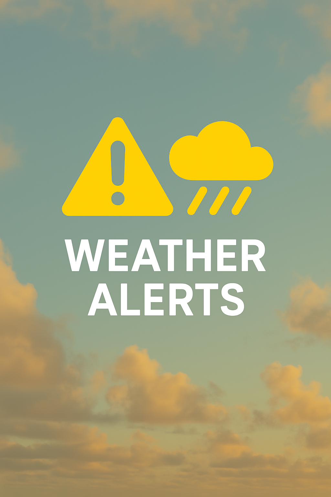

Stay informed about extreme weather conditions such as frost, cyclones, and heavy rainfall warnings.
Access IMD for Weather AlertsWeather plays a crucial role in agriculture, and timely weather alerts help farmers make informed decisions to protect their crops, livestock, and overall productivity. Here's why weather alerts are essential in farming:
Farmers rely on weather alerts to prepare for:
Weather alerts help farmers determine when to water crops and avoid unnecessary irrigation during expected rainfall, conserving water resources and reducing costs.
Certain weather conditions, such as high humidity and temperature fluctuations, encourage pest infestations and plant diseases. Forecasts allow farmers to apply pesticides and fungicides at the right time to prevent outbreaks.
Applying fertilizers or pesticides before rain can lead to nutrient loss due to runoff. Weather alerts help farmers time applications for maximum effectiveness.
Early warnings about cyclones, droughts, or unexpected weather conditions allow farmers to take preventive actions, reducing financial losses and ensuring food security.